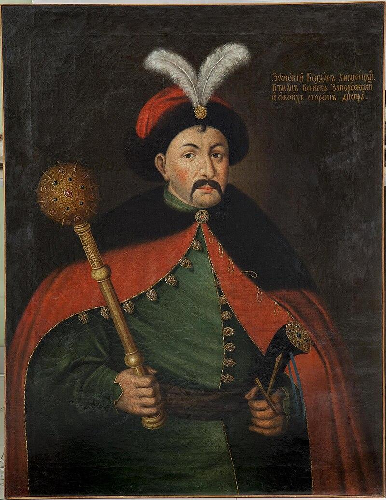
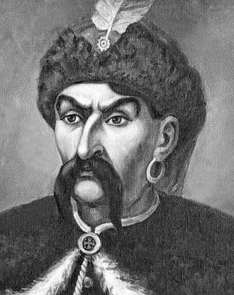
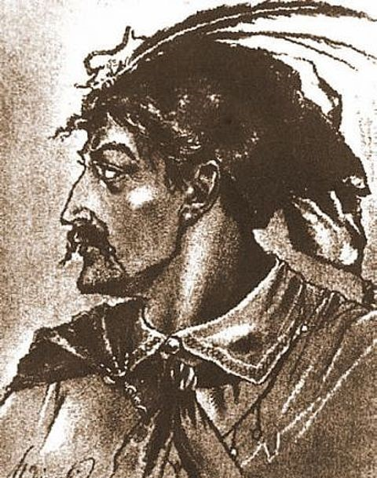
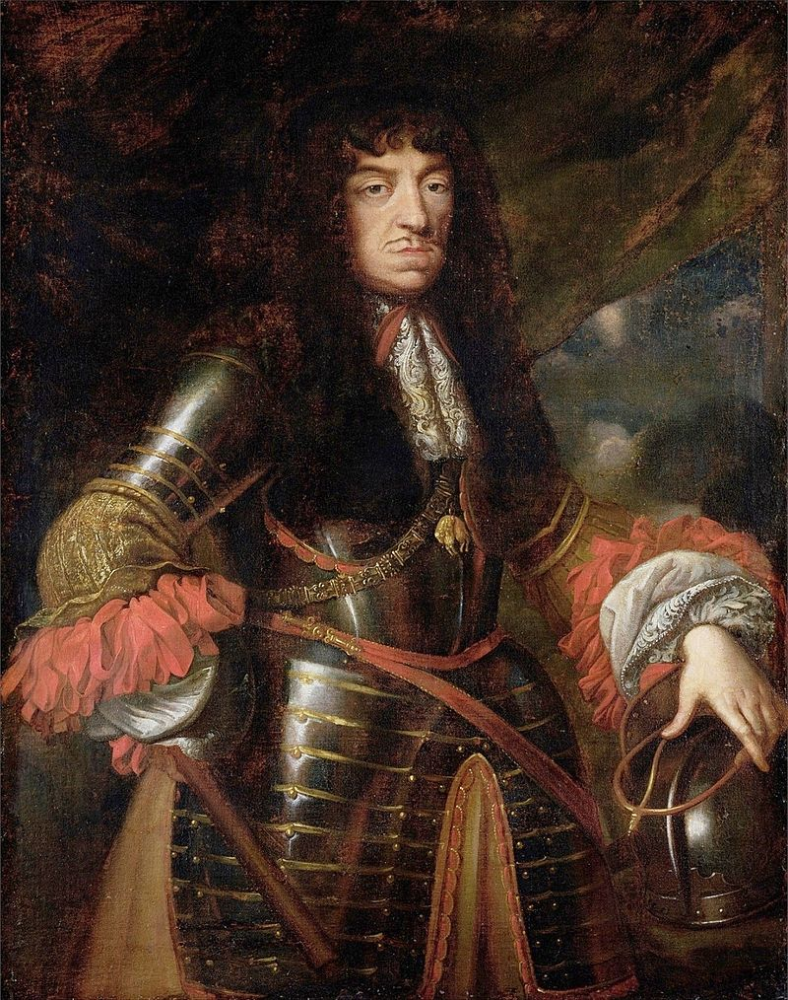
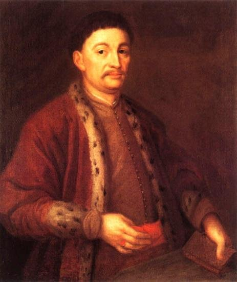
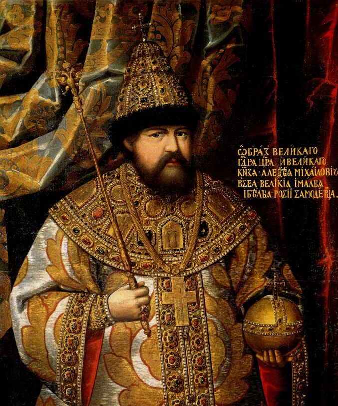

| Богдан Хмельницкий | ||
| Гетман Войска Запорожского и обоих сторон Днепра |  | Лидер и вдохновитель казацкого восстания. Объединил разрозненные военные силы Гетманщины в единое войско |
| Подробная информация | ||
| Максим Кривонос | ||
| Казацкий предводитель, один из ближайших соратников Богдана Хмельницкого |  | В 1648 году был наказным гетманом у четырёх полков: Лисянского, Корсунского, Белоцерковского и Уманского |
| Подробная информация | ||
| Иван Богун | ||
| Соратник Богдана Хмельницкого, Винницкий полковник |  | При обороне Винницы заманил польскую конницу на замаскированный соломой лёд, где они провалились в проруби, что привело к разгрому польского войска |
| Подробная информация | ||
| Ян II Казимир | ||
| Последний король польский и великий князь литовский из династии Ваза |  | На годы его правления пришлось три войны, потрясших Речь Посполитую: восстание Хмельницкого, русско-польская война, польско-шведская война |
| Подробная информация | ||
| Иеремия Михаил Корибут-Вишневецкий | ||
| Государственный и военный деятель Речи Посполитой, воевода русский, основной предводитель польско-литовских войск во время восстания |  | Богдан Хмельницкий считал Вишневецкого своим первейшим врагом, а зверства, учиняемые им над православными крестьянами и казаками, ставил поводом к разрыву переговоров |
| Подробная информация | ||
| Алексей Михайлович | ||
| Второй русский царь из династии Романовых |  | Признал суверенитет Русского царства над днепровскими казаками, вступил в затяжную войну с Польшей. Это также привело к русско-шведской войне в 1656—1658 годах |
| Подробная информация | ||